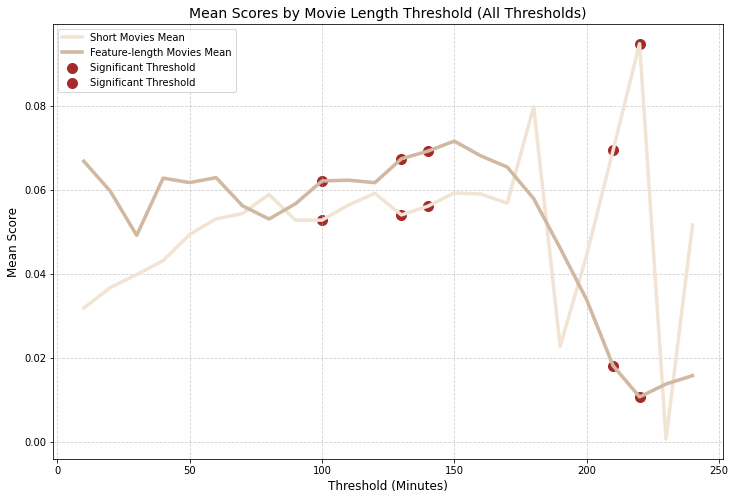

Clues to the Puzzle: The Length of the Movie and Its Ending
As detectives on the case, we now turn our attention to a new lead: could a film's runtime provide clues about the tone of its ending? Is there a hidden connection between how long a movie runs and its likelihood of delivering a ‘happy ending’? This chapter invites us to unravel this mystery, examining whether the length of a movie influences its emotional resolution.
The First Clue: Distribution of Scores by Film Length
A preliminary analysis reveals a stark difference in scores between short and feature-length films. A boxplot comparison highlights whether these scores are similarly distributed or if they diverge significantly. Does the runtime dictate the likelihood of a happy ending, or do short films pack just as much emotional punch in their limited duration?
The Key Evidence: Statistical Testing
To uncover deeper insights, we employ statistical tests like the Mann-Whitney U test, probing whether the observed differences in scores between short and feature-length films are statistically significant. These tests provide crucial evidence: are the differences we observe just random noise, or is there an underlying pattern that ties runtime to emotional resolution?
The results point to specific runtime thresholds where the differences in scores become statistically significant, suggesting that the length of a film might indeed influence its ending tone. But where exactly do these significant differences lie?
The Significant Thresholds
Following the clues, we zero in on key runtime thresholds and uncover significant disparities between the "short" and "long" categories. Here's what we found:
- Threshold: 100, p-value: 0.0003 - A major lead!
- Threshold: 130, p-value: 0.0088 - Another solid clue.
- Threshold: 140, p-value: 0.0432 - Just made the cut!
- Threshold: 210, p-value: 0.0123 - A promising lead.
- Threshold: 220, p-value: 0.0019 - Red-hot evidence!
These thresholds marked the spots where the data screamed, “Hey, something important is happening here!” Each p-value confirmed that these length divisions weren’t just random noise—they’re where the action is.
The Evidence Board: A Graph of Means
Our next step? Visualizing the clues. We plotted the mean values of the dependent variable for "short" and "long" films across different thresholds. Here's the breakdown:
- Axes: The x-axis tracks the film length thresholds, while the y-axis shows the mean values.
- Lines: The light line represents the "short" films, and the brown one traces the "long" ones.
- Highlights: Significant thresholds are spotlighted, marking the exact points where the gap between the two categories becomes most noticeable.
This chart is like our case map—pinpointing exactly where the "short" and "long" films start to diverge in ways that matter. Each significant threshold is a breadcrumb leading us to the bigger picture.
The Investigation Unfolds: The Link Between Film Length and Ending Type
Our investigation into the link between film length and the likelihood of a "happy ending" continues to evolve. The clues are there, but like any good detective, we must carefully interpret every lead that appears in the data. Here’s what we’ve uncovered so far.
The First Clues: Before the 190-Minute Threshold
The first clues suggest that, before reaching approximately 190 minutes, longer films seem more likely to have a "happy ending" compared to shorter films. A pattern emerges: longer films, with more time to develop plots and characters, tend to have a greater chance of ending on a positive note. The longer runtime allows for satisfying narrative resolutions, offering the audience a happy conclusion they expect.
The Turning Point: After 190 Minutes, a Subtle but Important Shift
However, this is where things get interesting. After about 190 minutes, the trend starts to shift slightly. Longer films seem less likely to deliver a "happy ending." This could be due to several factors. First, films exceeding this length (especially those over 200 minutes) are less common, which could skew the average. The longer a film is, the more likely it becomes to have a more complex narrative with less predictable, often more nuanced or open-ended conclusions. Filmmakers of very long movies may opt for dramatic or ambiguous endings, straying away from traditional "happy endings."
A Potential Bias: The Impact of Downsampling
It’s important to note that this observation might be influenced by the way we’ve handled the data. We may have performed some downsampling on certain very long films, which could have altered the distribution of the data and affected the calculated average. If the number of ultra-long films in our sample is low, this could bias the results. Longer films might have a more significant impact than our current data suggests, and a more detailed analysis could provide a clearer picture of how film length truly influences endings.
The Verdict: An Intriguing Lead, but Not Solved Yet
The 190-minute threshold isn’t a precise point but rather a range where the trend begins to reverse. Longer films generally have a "happy ending" before this threshold, but after 190 minutes, a reverse trend begins to appear. However, this observation should be taken with caution: the small number of very long films and the potential biases from downsampling make this conclusion less definitive.
We’ve uncovered valuable clues, but the mystery is far from solved. We’ll need to continue exploring these leads and perhaps refine our analysis to gain a more accurate understanding of the true impact of film length on the nature of endings.
Next Steps: Searching for More Clues
Our investigation is far from over. As we proceed to explore other factors such as genre, cast, and cultural influence, we will continue to look for additional clues to understand the intricate relationship between movie length and the nature of their endings. Stay tuned as we uncover the final pieces of the puzzle!